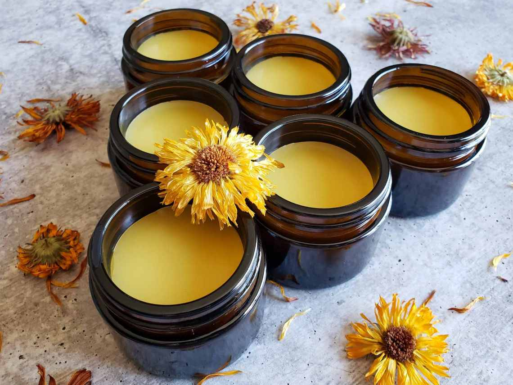
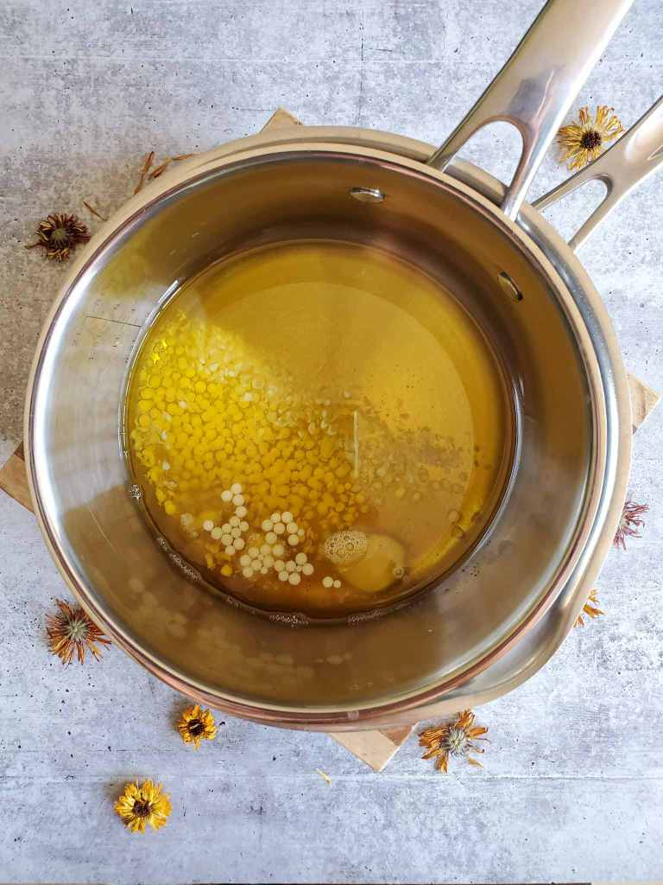

製作濕疹潤膚膏
2021-07-18

濕疹問題令人困擾，「金盞花止痕膏」的製作方法天然，讓受濕疹困擾的人士有多一個選擇。止痕膏適合輕度至中度濕疹患者使用，有消炎抗菌及舒緩作用。一有痕癢，便可塗抹止痕膏。
即使是天然護膚產品，每人對天然成份的反應也不同，建議先在手腕位置試用，24小時內沒有出現敏感反應，才正式使用。如出現敏感情況，應暫停使用並諮詢醫生意見。
天然的原材料:蜜蠟、乳木果脂、金盞花油
等待原材料完全溶解
小貼士：蚊膏不含任何防腐劑，可保存半年。出外可擦在手臂、頸部等部位，可維持1-2小時。此份量的精油搭配小朋友都可放心使用。但高血壓、蠶豆症、癲癇症人士忌用。
另外，1歲以下嬰兒及孕婦也不宜使用精油成份的產品，建議製作沒有精油成份的金盞花止痕膏。